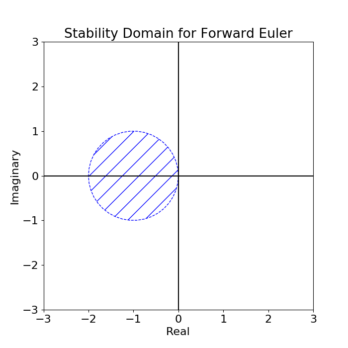
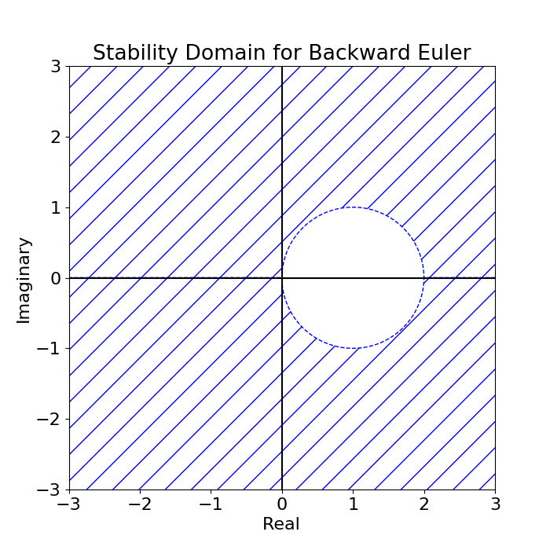

Time stepping referes techniques that propagate initial condidtions of an ODE or PDE discretely through time to obtain a numerical solution. Presently this article discusses only forward and backward Euler time-stepping.
- Euler Time-Stepping
- Forward Euler Time-Stepping
- Backward Euler Time-Stepping
- References
Grady recommends LeVeque's book [1] - presumably chapter 5 (p. 113).
Euler Time-Stepping
Euler time-stepping is explored in Experiment 001.
Problem
Given the differential equation $\vec{y}^\prime(t) = f(t, \vec{y})$ and the initial condition $\vec{y}_0$ find $\vec{y}(t)$.
We will approximate the true solution with a discrete solution but choosing a step size $\Delta t$, denoting the time at each step as $t_0 +n \Delta t = t_n$, then approximating the solution $\vec{y}_n \approx \vec{y}(t_n)$ at each step. This is done by using forward or backward approximations of $\vec{y}^\prime_n$.
Forward Euler Time-Stepping
In forward Euler we approximate $$\vec{y}^\prime(t) \approx \frac{\vec{y}_{n+1} - \vec{y}_n}{\Delta t}\text{.}$$ Using the definition of our differential equation we obtain the recurrence relation $\vec{y}_{n+1} = \vec{y}_n + \Delta t f(t_n, \vec{y}_n)$. This relation gives the next time-step explicitly in terms of the previous.
Stability
In analyzing the stability we first consider the one dimensional linear case where $f(t, y) = \lambda y$. Our forward formulation can now be expressed as $y_{n+1} = (1+\lambda \Delta t)y_n$ which leads to the solution $$ y_n = (1+\lambda \Delta t)^n y_0 $$ by induction.
This soultion is stable if $\norm{1+\lambda \Delta t}<1$. The stability domain is depicted in the picture to the right.
Backward Euler Time-Stepping
In backward Euler we approximate $$\vec{y}^\prime(t) \approx \frac{\vec{y}_{n} - \vec{y}_{n-1}}{\Delta t}\text{.}$$ Using the definition of our differential equation we obtain the recurrence relation $\vec{y}_{n+1} = \vec{y}_n + \Delta t f(t_n, \vec{y}_{n+1})$. This relation gives the next time-step implicitly in terms of the previous.
In the case where $f$ is linear we say $f(t_n, \vec{y}_n) = L\vec{y}_n$. Then the recurrence relation can be expressed explicitly and solved to give $$ \vec{y}_{n} = (I - \Delta t L)^{-n}\vec{y}_0 .$$
Stability
In analyzing the stability we first consider the one dimensional linear case where $f(t, y) = \lambda y$. The solution to the resulting recurrance relation is $y_{n} = \left( \frac{1}{1 - \lambda \Delta t} \right) ^{n}y_0$
This soultion is stable if $\norm{1-\lambda \Delta t}>1$.
For higher dimensional linear systems we have the relation $\vec{y}_{n+1} = (I - \Delta t L)^{-1}\vec{y}_n$ with the corresponding solution $\vec{y}_{n} = (I - \Delta t L)^{-n}\vec{y}_0$. If we perform a spectral decomposistion on the matrix $I - \Delta t L = U \Lambda U^{-1}$ we can reformulate the recurrance relation as $$ \begin{align} \vec{y}_{n+1} &= (I - \Delta t L)^{-1}\vec{y}_n \\ & = U \Lambda^{-1} U^{-1} \vec{y}_n \\ U^{-1} \vec{y}_{n+1} &= \Lambda^{-1} U^{-1} \vec{y}_n \\ \vec{w}_{n+1} &= \Lambda^{-1} \vec{w}_n \end{align} $$ where $\vec{w}_n = U^{-1}\vec{y}_n$. The solution is now represented as a completely decoupuled system. The original system is stable if each of the decoupled relations is stable. That is if $\norm{1-\lambda_i \Delta t}>1$ for $i=1, 2,..., n$ where $\lambda_i$ represents the $i$th eigenvalue of $L$.
Accuracy
The error for a single time step is $\mathcal{O}(\Delta t^2)$. The error at a given time $t = n\Delta t$ where $n$ increases so that $t$ is held constant is given by $\mathcal{O}(\Delta t)$. See Experiment 001 for details.
References
- Randall J. LeVeque. Finite Difference Methods for Ordinary and Partial Differential Equations. SIAM, 2007. URL: https://epubs.siam.org/doi/book/10.1137/1.9780898717839, doi:10.1137/1.9780898717839.fm.